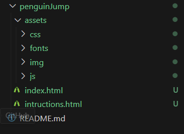
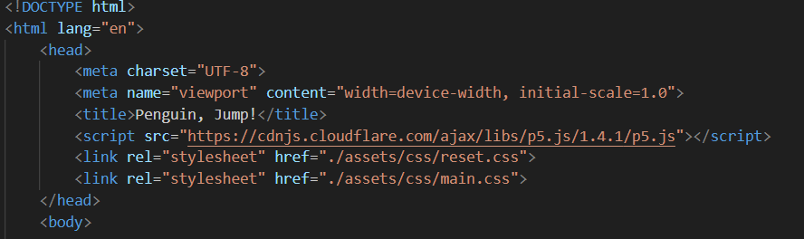
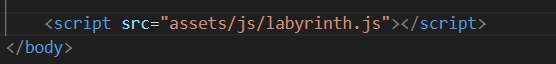
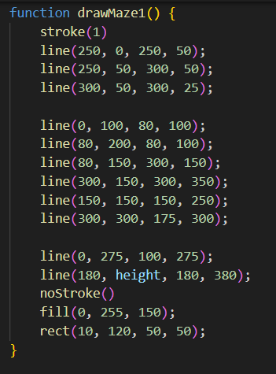
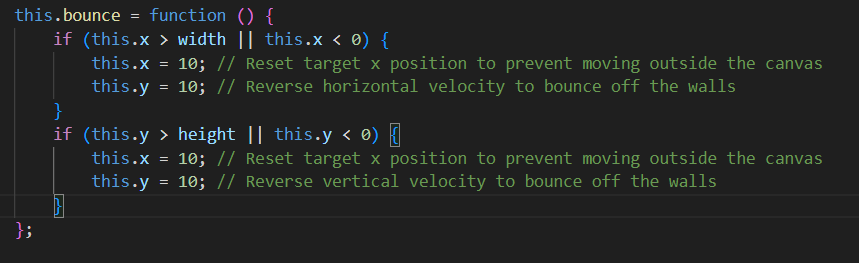
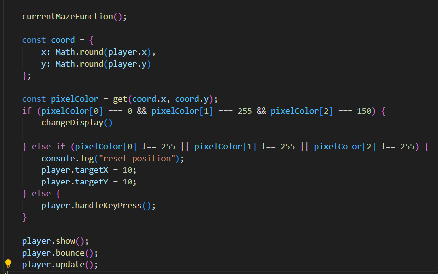

Welcome to Penguin, Jump!
Hier kan je aan de hand van de instructies zelf dit uitstekende spel maken met p5 Javascript, HTML en CSS
Stap 1: Basis bestanden opstellen
Maak een nieuwe map aan en noem deze PenguinJump. Maak vervolgens een index.html bestand aan. Ook maak je in de PenguinJump map een andere map assets aan, in deze assets folder maak je dan nog eens een folder css, en js toe, zo kun je goed overzicht houden van je documenten. in css folder maak je een main.css bedand aan en in de js map maak je een labyrinth.js bestand aan. Dit zou er als volgt moeten uitzien:
De font, en de foto's krijg je van ons.
Open je index.html bestand en druk de volgende tekens in: ! + tab. Dit zal een basis HTML structuur voor je aanmaken. In de head sectie van je HTML bestand voeg je de volgende regels toe:  Dit zorgt ervoor dat je CSS bestanden worden geladen.
Voeg ook het script toe aan je HTML bestand. Dit zorgt ervoor dat je p5.js library wordt geladen.
Voor het Javascript bestand zelf toe te voegen, begeef je u naar het einde van de body sectie van je HTML bestand en voeg je 
Stap 2: HTML bestand opstellen
In de index.html maak je een < main >< /main > hier in schrijf je zelf de tekst die nodig is aan de hand van h1, h2, en p waarbij een h1 voor de hoofdtitel staat, een h2 voor eventuele ondertitel en een p voor de tekst. dit doe je op deze manier: < h1 >titel< /h1 >. < h2 >ondertitel< /h2 >.
Stap 3: Het canvas opstellen
Om het spel te maken starten we met een canvas op te stellen. Dit doen we in onze setup functie in ons Javascript bestand labyrinth.js.
De setup functie is een functie die één keer wordt uitgevoerd wanneer het programma start. En die gebruiken we door het volgende te schrijven: "funtion setup() {}". Hier willen we onze canvas opstellen. Dit doen we door "createCanvas(400, 400);" te schrijven. Dit zorgt ervoor dat we een canvas van 400 bij 400 pixels krijgen.
Om een achtergrondkleur toe te voegen aan ons canvas, schrijven we "background(220);" in onze setup functie. Dit zorgt ervoor dat we een grijze achtergrond krijgen.
De background bestaat uit een RGB waarde. Dit betekent dat we een kleur kunnen kiezen door een waarde tussen 0 en 255 te kiezen. 0 is geen kleur en 255 is de maximale kleur. Als je geen grijswaarde wilt moet je 3 waarden schrijven. Dit ziet er zo uit: "background(255, 0, 0);". Dit zorgt ervoor dat je een rode achtergrond krijgt.
Stap 4: Variabelen
Soms willen we een waarde opslaan om later te gebruiken. Dit doen we door een variabele te maken. Een variabele is een container waarin we een waarde kunnen opslaan. Dit doen we door "let" te schrijven gevolgd door de naam van de variabele en een waarde. Dit ziet er zo uit: "let x = 200;". Dit zorgt ervoor dat we een variabele x hebben met de waarde 200.
Voor een variabele die niet veranderd schrijven we "const" in plaats van "let". Dit ziet er zo uit: "const y = 200;". Dit zorgt ervoor dat we een variabele y hebben met de waarde 200 die niet veranderd.
Bij dit spel maken de grootte van onze canvas variabel dus schrijven we "let canvasSize = 400;". En vervangen we de 400 in onze createCanvas functie met canvasSize.
Stap 5: Het labyrin tekenen
Eerst maken we een funtie aan voor elke maze dat we willen gebruiken. We starten met de eerste maze. Dit doen we door "function drawMaze1() {}" te schrijven. In deze functie willen we een labyrint tekenen.
Dit doen we aan de hand van lijnen die we op ons canvas tekenen. Een lijn heeft 4 waarden nodig. De x en y positie van het begin van de lijn en de x en y positie van het einde van de lijn. Dit ziet er zo uit: "line(0, 0, 400, 400);". Dit zorgt ervoor dat we een lijn tekenen van de linkerbovenhoek naar de rechteronderhoekhoek van ons canvas.
Voor dit spel hebben we de labyrinths gemaakt door altijd een lijn te tekenen die eventueel verder gaat op het laatste punt van de vorige lijn. Op deze manier kan je zoveel lijnen op je canvas zetten als je wenst.
Dit zou er dan zo moeten uitzien: 
Herhaal deze stap voor elke maze die je wilt gebruiken.
Gevordered zouden een labyrinth kunnen tekenen aan de hand van for loops maar dat is voor nu te complex.
Stap 6: Start voor de penguin
Nu onze labyrinths getekend zijn, willen we een penguin tekenen. Dit doen we door een functie aan te maken die we "drawPenguin" noemen.
We tekenen de penguin aan de hand van een ellipse. Een ellipse heeft 4 waarden nodig. De x en y positie van het midden van de ellipse, de breedte en de hoogte van de ellipse. Dit ziet er zo uit: "ellipse(200, 200, 50, 50);". Dit zorgt ervoor dat we een ellipse tekenen op de positie 200, 200 met een breedte en hoogte van 50 pixels.
We geven eerst een paar variabelen mee omdat we deze later moeten gebruiken voor de bewegingen.
De variablen zijn hier een beetje anders omdat deze specfiek zijn voor de speler. We schrijven voor deze variabelen "this.x = 10" en "this.y = 10". Dit zorgt ervoor dat we een variabele x en y hebben die specifiek zijn voor de speler. 10 is nu de positie waar de penguin altijd van begint.
We geven ook een variabele mee voor de locatie waar de penguin naartoe moet. Dit doen we door "this.targetX = 10" en "this.targetY = 10" te schrijven. Dit zorgt ervoor dat we een variabele targetX en targetY hebben die specifiek zijn voor de speler. Deze stellen we nu gelijk aan de vorige variabelen. Dus "this.targetX = this.x;" en "this.targetY = this.y;"
Stap 7: Tekenen van de penguin
De penguin staat momenteel nog niet op de pagina. Dit doen we door een nieuwe functie in de player class aan te maken die we "show" noemen. Deze gaan de penguin tekenen en laten zien. Geef een kleur aan de penguin door de tag "fill(255);" te schrijven. Dit zorgt ervoor dat de penguin wit is. We doen dit voor het tekenen van de vorm omdat het eerst een kleur verwacht. Indien er geen kleur wordt gespecifieerd word de laatste kleur die ingesteld werd gebruikt.
We tekenen de penguin aan de hand van een ellipse. Een ellipse heeft 4 waarden nodig. De x en y positie van het midden van de ellipse, de breedte en de hoogte van de ellipse. Dit ziet er zo uit: "ellipse(this.x, this.y, 50, 50);". Dit zorgt ervoor dat we een ellipse tekenen op de positie 200, 200 met een breedte en hoogte van 50 pixels.
Nu tekenen we een statische penguin. Dit betekent dat de penguin niet beweegt. Willen we de penguin doen bewegen dan moeten we de x en y waarden van de penguin gelijk stellen aan een waarde dat veranderd wordt. Dit doen we met de variabelen die we in de vorige stap hebben aangemaakt. Dus vervang the x waarde naar this.x en de y waarde naar this.y.
Je zal zien dat er niets op de pagina verschijnt. Dit komt omdat we de show functie nog niet hebben aangeroepen. Dit doen we door de show functie aan te roepen in de draw functie. De draw functie is een functie die continu wordt uitgevoerd. Een draw function wordt aangemaakt op dezelfde manier als de setup functie: function draw() {}. In deze functie roepen we de show functie aan door "player.show();" te schrijven.
Stap 8: Bewegen van de penguin
Het bewegen doen we via de pijltjes toetsen. Hierbij wordt weer een nieuwe funtie aangemaakt genaamd handleKeyPress. Deze functie doet niets zolang er geen pijltjes worden ingezet. De functie monitort of er een pijltjestoets wordt ingedrukt via een if statement. Dit ziet er zo uit: "if (statement)". Om nu de keys te monitoren veranderen we de statement naar "keyIsDown(UP_ARROW)". En binnen onze if statement schrijven we this.targetY (Dit is de derde variabele die we hebben aangemaakt) en stellen we deze gelijk aan de this.y waarde min de grootte van de stap dat we willen dat de penguin zet. Voor nu zetten we deze gelijk aan 10. Uiteindelijk ziet de if statement er zo uit: if(keyIsDown(UP_ARROW)) { this.targetY = this.y - 10; }. We herhalen deze stap voor de andere pijltjestoetsen. De pijl naar beneden gebruikt this.y + 10, de pijl naar links gebruikt this.x - 10 en de pijl naar rechts gebruikt this.x + 10.
Ook moeten de waardes altijd geupdate worden. Dus schrijf een nieuwe functie genaamd this.update. Hierin updaten we de this.x en de this.y waardes naar de this.targetX en this.targetY waardes. Dit ziet er zo uit:
this.x = lerp(this.x, this.targetX, 0.1);
this.y = lerp(this.y, this.targetY, 0.1);
Zorg er ook voor de de update en de handleKeyPress functies worden aangeroepen in de draw functie. Dit ziet er zo uit:
player.handleKeyPress();
player.show();
Stap 9: zijkanten van het canvas
Als je nu probeert te bewegen zal je zien dat de penguin van het canvas af kan. Dit is niet de bedoeling. Om er voor te zorgen dat dit niet gebeurt moeten we een if statement toevoegen die checkt of de penguin binnen het canvas is, hierbij controleren we of de this.x en this.y waardes binnen het canvas zijn. we schrijven dit in de player function, Dit ziet er zo uit:

Zorg er ook voor dat de bounce functie wordt aangeroepen in de draw functie. Dit ziet er zo uit:
player.bounce();
Stap 10: De maze aanraken
Momenteel kan je je begeven naar de uitgang van het labyrint zonder dat er iets gebeurt als je de muren aanraakt. Om dit te voorkomen moeten we een if statement toevoegen die checkt of de penguin het doolhof aanraakt, hierbij controleren we of the postitie waar het midden van de penguin zich bevindt gelijk is aan de kleur zwart. Is dit zo dan moet de penguin terug naar het begin van het labyrint. Dit doen je als volgt:

Deze wordt in de draw functie zelf geplaatst omdat we willen dat dit continu wordt gecheckt.
Stap 11: Het spel voltooien
Als je nu de uitgang van het labyrint aanraakt zal er niets gebeuren. Om het spel te voltooien moeten we een functie aanmaken die de speler feliciteert. Dit doen we door een functie aan te maken die we "changeDisplay" noemen. In deze functie veranderen we de display van de pagina zodat er een bericht verschijnt dat de speler het labyrint heeft voltooid. Dit ziet er zo uit:
const completedBox = document.querySelector(".completed-box");
completedBox.classList.remove("completed-box--hidden");